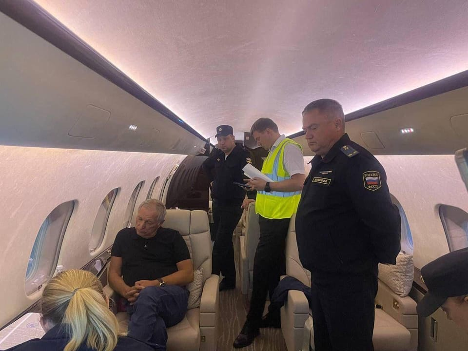

世界苦茶07月08日新闻 | 46条 | 甘肃天水幼儿园铅重度发布通报

甘肃天水幼儿园铅重度发布通报 | 美国向日韩等多国发送关税信函 | 卢比奥将展开首次亚洲行 | 美团阿里陷入价格战 | 俄交通部长被解职后自杀
今日三条新闻分析
苦茶数据
美元兑人民币：7.17（昨日7.16，前日7.16）
美元兑日元：146.10（昨日144.32，前日144.51）
上证指数：3493（昨日3463，前日3472）
标普500指数：6229（昨日6279，前日6227）
比特币：108024（昨日109046，前日108097）
布伦特原油：69.19（昨日67.72，前日68.30）
中国新闻
• 甘肃天水当局7月8日通报，培心幼儿园幼儿血铅异常系添加彩绘颜料制作食品所致： 根据通报，培心幼儿园早餐留样的三色红枣发糕铅含量为1052毫克/千克，晚餐留样的玉米卷肠包铅含量为1340毫克/千克，严重超出国家标准的0.5毫克/千克。经侦查，幼儿园园长朱某琳，投资人李某芳，同意后厨人员通过网络平台购买彩绘颜料，稀释后用于部分食品制作。颜料含铅且包装明确标识不可食用。截至7日22时，培心幼儿园251名幼儿中血铅异常233人、正常18人。李某芳投资管理的其他3所幼儿园采样检测结果均正常。公安机关已以涉嫌生产有毒、有害食品罪，将朱某琳、李某芳等8人依法刑事拘留，对另外2人依法采取取保候审强制措施。 （翻评：不是特别相信。）
• 青岛宿管离世引发空调舆论 ：持续高温之下，中国山东青岛大学一宿管大爷在值班室昏迷后不幸离世，有网民爆料是酷暑所致。随后又传出青岛大学开始安装空调的消息，导致更多网民猜测两者之间的联系，舆论不断发酵。但据极目新闻报道，青岛大学本有计划为每个学生宿舍配备空调，与宿管大爷不幸身亡事件无关。青岛大学后勤管理处接线工作人员对极目新闻表示，学校有给学生公寓在暑期安装空调的计划，具体施工进度暂不清楚。但安装空调的计划之前就有，今年上半年就在跟进，不是因宿管大爷不幸身亡事件发生才装的。
• 欧中气候声明签署推迟 ：欧盟据报推迟了与中国签署气候行动联合声明的计划，并称除非中国承诺加大力度削减温室气体排放，否则不希望看到这份联合声明提前签署。中方则回应称，中国始终积极推进绿色低碳发展。《金融时报》星期一刊登文章称，欧盟和中国原本将在纪念中欧建交50周年的峰会上签署气候行动联合声明，但现在这一计划已经推迟。欧盟官员称，布鲁塞尔已多次拒绝中国提出的在峰会后共同发布气候承诺的请求，除非中方承诺采取更多措施削减温室气体排放。
• 台风致浙江客运大规模停运 ：受台风“丹娜丝”影响，浙江全省65条客运航线停航，207个水工项目停工。中国央视新闻报道，台风“丹娜丝”星期一继续北上，靠近浙江福建沿海。浙江沿海海面最大风力已达8级，浪高最高1.5米，并伴有大暴雨。浙江海事局已于星期一上午8时将浙南海域海上防台应急响应上调为II级。目前，有4200余艘商船在浙江锚泊避风，其中温州、台州水域有200余艘商船在港避风。
• 莫迪祝达赖生日中方抗议 ：印度总理莫迪向流亡印度的西藏精神领袖达赖喇嘛90岁致生日祝福，印方代表出席达赖庆寿活动。中国外交部回应称，印方应谨言慎行，停止利用涉藏问题干涉中国内政，中方已就此向印方提出交涉。十四世达赖喇嘛星期天年满90岁，莫迪当日向达赖喇嘛致以90岁生日祝福，印度议会事务部部长等作为印度政府代表出席达赖“庆生”活动。中国外交部发言人毛宁星期一表示，中国政府在涉藏问题上的立场是一贯的、明确的。“众所周知，十四世达赖是一个披着宗教外衣，长期从事反华分裂活动，图谋把西藏从中国分裂出去的政治流亡者”。
• 中国发布养老机构应急预案 ：中国民政部印发《养老机构突发事件应急预案》，规范这类突发事件的应急处置和响应程序，明确事件应对的总体要求、分类分级、处置救援、善后处置等事项。据新华社报道，星期一从民政部获悉，应急预案旨在健全养老机构突发事件应急处置工作机制，规范养老机构突发事件应急处置和响应程序，提高民政部门和养老机构应对处置养老机构突发事件的能力。预案中所称的突发事件，是指突然发生，对养老机构造成或可能造成严重危害，需采取应急处置措施予以应对的自然灾害、事故灾难、公共卫生事件和社会安全事件。
• 中副总理或将访日世博会 ：日本共同社引述多名日中外交消息人士报道，中国国务院副总理何立峰拟配合大阪世博会的中国国家日活动而访日，正在就此协调。共同社星期六报道上述消息，并称担任日中友好议员联盟会长的日本自民党干事长森山裕将在大阪与何立峰会谈，再次表示希望租借新的大熊猫。中国贸促会此前曾表示，大阪世博会将于7月11日隆重举办中国国家馆日活动，邀请中日两国领导人和各方代表人士出席。
• 家政兴农方案发布 ：中国发布包含14项具体任务的家政兴农方案，旨在推动农村劳动力再培训，提升其就业前景。综合央视新闻和路透社报道，中国商务部、国家发展改革委等九部门星期一发布《2025年家政兴农行动工作方案》，从四方面提出了14项具体任务，持续促进家政服务业提质扩容，助力推进乡村振兴。该方案的发布，正值中美关系紧张、经济放缓以及气候变化挑战加剧之际。今年4月，中国宣布了一项为期十年的建设农业强国计划，《加快建设农业强国规划（2024-2035年）》。 （翻评：农村劳动力菲佣化，但中国多少城市家庭雇得起佣人？）
亚太印太新闻
• 鲁比奥展开首次亚洲行 ：美国国务卿鲁比奥将前往马来西亚，参与亚细安外长会议，开启他上任以来的首次亚洲之行。法新社报道，鲁比奥将于星期二启程到马来西亚两天，届时将与俄罗斯外长拉夫罗夫和中国外长王毅会面。美国国务院发言人布鲁斯星期一发声明说：“这是鲁比奥就任后的首次亚洲之行，他将重点重申美国致力于推进自由、开放和安全的印太地区的承诺。”
• 韩国热病七人死亡 ：酷暑天气持续，韩国各地陆续出现热衰竭、中暑等温热病病例，其中七人死亡。韩联社报道，韩国疾病管理厅星期一说，当局自5月15日启动“温热疾病监测预警系统”，截止7月6日，全国累计温热病患者多达875人，其中七人死亡。单在7月6日当天，全国就有59人因温热病症状前往急诊室，两人不治身亡。
• 印尼火山喷发致航班取消 ：印度尼西亚勒沃托比·拉基拉基火山发生猛烈喷发，至少24个往返峇厘岛的航班被取消。法新社报道，位于东努沙登加拉省的勒沃托比·拉基拉基火山星期一早上11时左右发生猛烈喷发，喷出高达18公里的火山灰柱，直冲高空。此次喷发持续时间约6分26秒，期间伴随巨大声响和高温火山云，部分火山云飘移至北部和东北方向，最远达五公里。
• 李在明支持率破六成 ：韩国最新民调显示，总统李在明就职满一个月后，好评率突破60%。韩联社报道，根据韩国民调机构Realmeter星期一发布的一项民调，李在明的施政好评率为62.1%，较上周上升2.4个百分点，就职后连续四周上升。反观，差评率为31.4%，较上周下降2.2个百分点。另外，仅6.5%受访者对于李在明的表现回答“不清楚”。
• 泰国撤回赌场合法化法案 ：由于民众反对声浪高，加上国内政治动荡，泰国政府将撤回一项备受争议的赌场合法化法案。彭博社报道，为泰党党鞭威素星期一说，原定于7月9日提交议会审议的这项法案，将在当天提出撤回动议。此前，政府称将推迟提交这项法案，并称需要更多时间与民众沟通，回应社会对赌博成瘾和洗钱问题的关切。
• 胡志明火灾八死两童罹难 ：越南胡志明市一栋五层公寓楼发生严重火灾，造成八人死亡，其中两名死者为儿童。越通社星期一报道，火灾发生于星期天晚上10时许，公寓地面层冒出浓烟和火焰，火势随后迅速蔓延，多辆摩托车、自行车和汽车被烧剩骨架。另据法新社报道，当局说，八名死者均因吸入浓烟致死。
• 朱立伦批赖清德歪曲历史 ：台湾在野的国民党主席朱立伦星期一发文纪念“七七事变”88周年，并指台湾总统赖清德为达台独目标不惜扭曲历史，呼吁他停止造谣抹黑。朱立伦星期一在脸书上发文称：“88年前的今天，卢沟桥的枪声划破宁静夜空，揭开了全民奋起抗日的序幕。在随后八年的漫长抗战中，全国军民牺牲惨烈，付出超过两千万条生命的代价，粉碎了侵略者的野心，守护了中华民国的国家尊严”。他说，抗战胜利后，台湾结束50年殖民统治。“今年也是台湾光复满80周年，我们更应珍惜这段来之不易的自由与和平，并且感念当年无数先烈、先贤的牺牲与奉献”。
科技新闻
• 华为驳盘古模型抄袭指控 ：华为人工智能研究部门驳斥了网络上有关其盘古大语言模型抄袭阿里巴巴模型的指控，称其为自主研发并独立训练的模型。综合快科技和澎湃新闻报道，开源平台GitHub一项研究称，华为盘古大模型与阿里通义千问Qwen-2.5 14B模型在注意力参数分布上有相关性，超正常范围。这项研究称，这种相似性表明华为的模型可能是“再加工”而来，而非从头训练而成。该指控在人工智能圈子和中文科技媒体中引发广泛讨论。
• AI药物公司将启动人体试验 ：Isomorphic Labs 总裁Murdoch透露，公司由AI设计的药物准备启动首次人体试验。该公司正在利用AI技术辅助开发抗癌药物，“下一个重要的里程碑将是真正进入临床试验阶段，即将用于人体测试。目前我们在招募相关人员。”Murdoch表示。Isomorphic Labs于2021年由谷歌DeepMind分拆而来，其诞生于 DeepMind最知名的突破研究之一：模型AlphaFold。该模型是DeepMind开发的首款AI工具，用于预测蛋白质三维结构。去年DeepMind更新了3代模型AlphaFold 3，称其是一种“革命性模型”，可以“以前所未有的准确度预测所有生命分子的结构和相互作用”。
• 苹果就欧盟重罚提起上诉 ：美国苹果公司对欧盟五亿欧元的罚款提出上诉，称该罚款 “史无前例”，并指责监管机构对其应用商店要求的变更是 “非法的”。欧盟委员会于四月份根据《数字市场法》宣布了这项罚款，称这家iPhone制造商违反了有关允许开发者引导用户在其应用商店外进行购买的规定。今年六月，苹果修改了其欧盟应用商店政策，以符合当地要求并避免额外罚款。苹果公司说，我们认为欧盟委员会的决定以及他们开出的史无前例的罚单，远远超出了法律要求的范畴。正如我们的上诉将表明的，欧盟委员会在强行规定我们应如何运营应用商店，并强制推行一些条款，这些条款既让开发者感到困惑，也对用户不利。
• 数据显示Threads已接近X的日活应用用户： 根据市场情报提供商 Similarweb 的最新数据显示，Instagram Threads 在移动应用用户方面已接近其主要竞争对手X。六月，Threads 的 iOS 和 Android 移动应用的日活跃用户达到 1.151 亿，同比增长127.8%；X 的日活跃用户达到 1.32 亿，同比下降 15.2%。相比之下，去中心化社交网站 Bluesky 截至六月同比增长达到372.5%，但其全球日活跃用户数量仍然相当小：该公司估计，截至六月日活跃用户仅为 410 万。去年年底美国总统大选之后，Bluesky受益匪浅，因为用户因抗议其所有者埃隆·马斯克与特朗普总统关系密切而纷纷退出社交媒体平台 X 。
财经新闻
• 欧盟美将达贸易协定框架 ：欧盟委员会主席冯德莱恩与美国总统特朗普通话“交流良好”，欧盟也将与美国达成贸易协定框架。彭博社报道，欧盟发言人吉尔星期一说：“双方进行了良好的交流。我们正处于最终阶段的开端，至少在原则上达成协议。”欧盟必须在7月9日之前与特朗普达成贸易协议，否则几乎所有欧盟对美出口产品的关税都将提高至50%。
• 三星电子二季度营业利润同比减55.9%： 三星电子今日披露业绩数据，按合并财务报表口径计算的公司今年第二季度营业利润同比减少 55.94%，为4.6万亿韩元。销售额同比减少 0.09%，环比下降 6.49%，为74万亿韩元。营业利润环比也下滑31.24%，比韩联社旗下金融信息子公司联合 Infomax 统计的市场预期低23.4%。以单季营业利润为准，为2023年第四季度以来的最低值，以历年第二季度为准，则为2023年第二季度以来的最低纪录。由于负责芯片业务的设备解决方案部门业绩持续低迷，加上受对华人工智能芯片相关制裁的影响等，整体业绩低于预期。
• 印尼每年购美百万吨小麦 ：印度尼西亚面粉厂协会将签署一项协议，在未来五年内每年至少进口100万吨美国小麦，价值12亿5000万美元。法新社报道，印尼面粉厂协会会长、保佳沙利主席弗朗西斯库斯星期一说，已与美国小麦协会达成协议，将在明年至2030年期间购买100万吨小麦。”他说：“在印尼关税谈判的背景下，我们作为私营企业，与美国私营企业——美国小麦协会——同意达成协议。”
• 日产拟与鸿海合作造电车 ：日本媒体报道，日本车企日产汽车正探讨与台湾鸿海精密工业集团开展电动车领域合作。日本共同社星期天引述消息人士报道，经营状况低迷的日产汽车正与鸿海探讨在纯电动汽车领域开展合作。双方考虑在日产位于神奈川县横须贺市的追滨工厂生产鸿海EV。若能实现合作，原本考虑关闭的追滨工厂将转危为安继续运营，并或为日产重整经营提供助力。
• 特朗普威胁征税反美国家 ：美国总统特朗普警告，与金砖国家“反美政策”保持一致的国家将被额外加征10%关税。中国外交部回应称，金砖机制不针对任何国家，并强调中国反对以关税作为胁迫施压的工具。特朗普星期天在社媒平台Truth Social写道：“与金砖国家反美政策保持一致的任何国家，都将被额外征收10%的关税。这项政策不会有例外。” 但特朗普没有对他在贴文中提到的“反美政策”提供解释或详细说明。中国外交部发言人毛宁星期一在例行记者会上说，金砖机制是新兴市场和发展中国家合作的重要平台，倡导开放包容，合作共赢，不搞阵营对抗，不针对任何国家。
• 越南对华热轧钢征反倾销税 ：越南在类似临时反倾销税到期后，对原产于中国的部分热轧卷钢产品征收高达27.83%的反倾销税。据路透社报道，越南贸易部星期一在声明中说，新反倾销税措施星期天起生效，为期五年。越南贸易部3月征收为期120天的类似临时反倾销税。
• 德养老基金罕见投资中国股市 ：全球机构普遍对中国股市持审慎态度之际，德国一家大型养老基金罕见地将部分资金交由中国资产管理公司管理，以投资中国本地股票。彭博社引述知情人士消息报道，管理资产规模达341亿欧元的德国养老基金KZVK，在第二季度向上海富国基金管理有限公司的香港分支委托了5000万美元，投资范围涵盖香港、中国大陆以及在美国上市的中资股票。报道称，自去年9月以来，中国大陆和香港股市在一系列经济刺激措施带动下出现温和回升。但过去几年因监管整顿、经济放缓及地缘政治紧张所引发的剧烈抛售，令不少长期投资机构还没来得及重新配置资产。目前多数涉华公开市场投资委托为续约，新增配置则较为罕见。
• 专家建议十五五扩大消费 ：随着贸易紧张局势和通缩压力加剧，中国政府的政策顾问越来越多地呼吁在下一轮五年规划中，把增强家庭部门对整体经济增长的贡献作为优先事项。中国领导人正在为国民经济和社会发展第十五个五年规划征集建议。路透社星期一报道称，多位政策顾问表示，这份文件将原则上把扩大居民消费列为重点目标，但可能不会设定明确的数值指标。报道称，中国居民消费目前占国民经济的比重仅约40%，部分顾问建议，在接下来的两个五年规划周期中，这一比例应提高至50%以上。
• 泰美贸易谈判盼免高关税 ：泰国财政部长比猜星期一说，泰国已向美国提交最新的贸易提案，希望能争取美国不向泰国征收高额关税。路透社报道，上周结束在华府的谈判后返回曼谷的比猜说：“我们听取了他们的反馈，了解他们特别关注的领域并做了一些调整。”他表示泰国未来还可能进行其他调整。
• OPEC+增产致油价下跌 ：国际油价星期一下跌超过1%，因石油输出国组织与非成员国组成的OPEC+上星期六宣布，8月原油产量将超预期增加，引起市场对供应过剩的担忧。布伦特原油期货下跌80美分，至每桶67.50美元；西得克萨斯州中质原油下跌1.32美元，至每桶65.68美元。OPEC+在7月5日宣布，将8月每日增产量提升至54.8万桶，远高于此前5月至7月每日增产41.1万桶以及4月每日增产13.8万桶的水平。OPEC+说，全球经济前景稳定、市场基本面良好以及原油库存低位，是此次决定增加供应的主要原因。
• 西班牙一锂电池回收工厂起火三天仍未扑灭： 西班牙首都马德里附近的一家锂电池回收工厂4日发生火灾，至6日仍未扑灭。火灾导致两人受伤。这家工厂位于马德里东北方向约50公里的一个工业区，消防员7月6日仍在奋力灭火。几起爆炸引燃大火，爆炸原因尚不清楚。由于火灾导致有毒烟雾释放，当地政府通过手机向周围5个社区大约6万名居民发送警报，提醒他们不要外出，紧闭门窗并关闭空调。
• 香港稳定币条例8月生效 ：香港《稳定币条例》今年8月生效，香港财经事务及库务局长许正宇表示，香港批出的稳定币牌照数目会是“个位数”，盼于条例生效后能够收到申请，目标今年内可发出牌照。“稳定币”是一种旨在与某些资产维持相对稳定价值的虚拟资产。许正宇接受香港《明报》访问时表示，香港金管局目前就落实条例指引咨询市场，该指引本月内公布，具体内容将涉及反洗钱及其他相关要求。
• 美团阿里补贴大战升级 ：中国互联网巨头美团和阿里巴巴之间的外卖补贴大战在周末骤然升级，放出大量大额补贴券，部分外卖还能“零元购”。综合澎湃新闻、第一财经等报道，7月初阿里巴巴旗下闪购宣布补贴500亿元冲击美团，市场还传言淘宝闪购将星期六定为“冲单日”，瞄准9000万至1亿单冲刺峰值。作为应对，美团星期六突然升级外卖补贴。不少网民当天表示，美团星期六开始投放不少“0元购”外卖红包券，领取后可以免费获得奶茶、汉堡等，选择外送需要满一定额度并支付配送费，选择到店自取则完全免费。
• 中国原煤产量创历史新高 ：中国前五个月累计生产原煤19.9亿吨，同比增加1.1亿吨，创历史同期新高。中国央视新闻引用中国煤炭工业协会最新发布的数据报道，6月中旬，中国全国电厂库存约2.1亿吨，比3月末增加约300万吨，可用约35天。报道称，这一产量能为迎峰度夏能源保供提供坚实支撑。
• 巴西望中方解除鸡肉禁令 ：巴西农业部长法瓦罗说星期天说，自巴西5月在一处商业养殖场发现禽流感病例后，中国暂停进口巴西鸡肉，但目前正研究尽快解除这一禁令。据路透社报道，法瓦罗说，这一议题是在巴西总统卢拉与中国国务院总理李强的会晤中提出的。他说，中国正评估相关事宜。金砖国家领导人第十七次会晤正式开幕前，李强星期六与卢拉在里约热内卢会面。
• 特朗普威胁日韩加税 ：特朗普7月7日晚宣布，已分别致信韩国总统李在明和日本首相石破茂，告知美国将于8月1日起对日韩征收25%关税；并威胁称若日韩对美加征关税，美国将在25%的税率基础上追加同等税率。 • 特朗普随后还宣布其他国家税率： 突尼斯、马来西亚和哈萨克斯坦的关税为25%；南非和波黑为30%；印度尼西亚为32%；塞尔维亚和孟加拉国为35%；柬埔寨和泰国为36%；老挝和缅甸为40%。特朗普当天签署行政令，将原定7月9日的谈判截止日期继续延长至8月1日。截至目前，仅英国和越南与美国达成协议。 （翻评：好像比越南的20%没有高很多。）
• 沃尔沃中国区大规模裁员 ：继沃尔沃宣布全球裁员3000人后，中国区员工也收到裁员通知。界面新闻了解到，近期沃尔沃对中国区员工展开裁员，主要涉及上海技术研发中心的员工，岗位涉及工程、研发、供应链管理等，裁员赔偿基本为N+3个月工资。此次裁员集中在位于上海嘉定的沃尔沃汽车技术中心，岗位包含工程、研发、供应链等多个部门。有沃尔沃员工表示，此次裁员的具体人数未知，部门之间裁员比例不同，从 10%到 70%都有涉及。据了解，此次裁员流程迅速，6月30日 收到通知、分批面谈，到7月2日已经基本都走完流程。
• 美国零售巨头亚马逊和沃尔玛大打折扣战 ： 亚马逊和沃尔玛本周将针锋相对，此前这家电商巨头和全球最大零售商将旗舰年度折扣期定在同天，以争夺美国消费者的青睐。亚马逊公司将其年度 Prime Day 数字销售活动从7月8日开始，与沃尔玛去年的促销日期相同，并将其活动时长从两天延长到四天。沃尔玛则坚持同一天开启促销，直接正面交锋 —— 并反超亚马逊，将其活动时长从四天延长至六天。
俄乌战争
• 俄前交长自杀前被免职 ：俄罗斯前交通部长罗曼·斯塔罗沃伊特7月7日在私家车中自杀身亡，身上有枪伤。俄罗斯联邦侦查委员会通报了事件，并表示现场仍在进行调查。当天上午，斯塔罗沃伊特被总统普京解除职务，原因未公布。俄罗斯媒体报道，解雇可能与其挪用国家资金的调查有关。该资金本应用于修建库尔斯克的防御工事。斯塔罗沃伊特2024年5月担任交通部长前担任库尔斯克州州长。
• 普京欲夺取国内大亨的商业帝国，莫斯科精英陷入恐慌： 弗拉基米尔·普京政府已发起一场大规模行动，试图将俄罗斯首富之一、俄罗斯最大金矿公司老板康斯坦丁·斯特鲁科夫的资产国有化。随着乌克兰战争造成的经济损失日益加深，此举标志着克里姆林宫从其精英阶层攫取财富的行动急剧升级。斯特鲁科夫的财富估计超过35亿美元，他是尤祖拉尔佐洛托的创始人，该黄金帝国历经数十年建立，与克里姆林宫关系密切。然而，7月5日，他的私人飞机在准备飞往土耳其时被俄罗斯当局停飞。据报道，他的护照被扣押，飞机被禁止起飞。据多家俄罗斯媒体报道，联邦安全局直接参与了阻止这起逃亡事件，其行动依据的是与一桩大规模案件相关的法院命令。该案件的检察官要求没收斯特鲁科夫的资产。指控？他的资产是通过涉及空壳公司、家庭成员和内部人员的腐败手段获得的——这类指控经常针对俄罗斯的亿万富翁，但很少针对那些被视为忠诚的富豪。 （翻评：俄版远洋捕捞。）
国际新闻
• 以军空袭胡塞控制港口 ：以色列星期一凌晨零时前后对也门西部红海沿岸的胡塞武装控制区发动空袭，目标包括多处港口和关键能源设施。胡塞武装旗下马西拉电视台报道，以军战机对红海沿岸的荷台达省发动多次空袭，目标包括荷台达港、伊萨角港、萨利夫港以及卡提卜中央发电站。卡提卜发电站是荷台达省最重要的电力基础设施之一。伊萨角港有大量石油和天然气储罐，是胡塞武装接收进口燃油的重要枢纽。
• 内坦亚胡将访白宫谈停火 ：以色列总理内坦亚胡星期一将到白宫与美国总统特朗普举行会谈。内坦亚胡相信，与特朗普的会谈将有助于推进以哈停火和释放人质的谈判。特朗普预计本周可能达成以哈停火协议。路透社报道，内坦亚胡星期天说：“与特朗普总统的会谈肯定有助于推进这些成果。”他表示决心确保被关押在加沙地带的人质返回，并消除哈马斯对以色列的威胁。这将是特朗普重回执政近六个月来，内坦亚胡第三次到访白宫。
• 伊朗总统称遭以色列暗杀未遂 ：伊朗总统佩泽希齐扬说，以色列在过去的空袭中，曾试图暗杀他。法新社报道，在星期一发布的访问中，佩泽希齐扬回应美国媒体人卡尔森有关以色列曾试图暗杀他的提问时说：“是的，他们以色列确实尝试过。他们采取了相应的行动，但失败了。暗杀我的幕后黑手不是美国，而是以色列。我当时正在开会……他们试图轰炸我们开会的地点。”对于与美国重启核谈判的可能，佩泽希齐扬说，只要两国之间能够重建信任，重启核谈判“没有问题”。
• 以哈谈判无果因权限不足 ：两名知情的巴勒斯坦消息人士星期一说，哈马斯和以色列未能在卡塔尔举行的间接停火谈判首轮会议达成一致，并指以色列代表团没有获得充分授权，无法与哈马斯达成协议。以哈间接停火谈判星期天在多哈举行，而以色列总理内坦亚胡将于星期一访问美国，这将是他在美国总统特朗普1月重回执政后，第三次访问白宫。消息人士告诉路透社：“以色列代表团并没有获得充分授权，无法与哈马斯达成协议，因为它没有真正的权力。”
• 特朗普称削减预算无碍救灾 ：美国总统特朗普不认为联邦政府削减气象部门预算并裁减员工，影响得克萨斯州洪灾应对工作。综合路透社和新华社报道，特朗普星期天在新泽西州高尔夫俱乐部度周末后离开时，被问及联邦政府削减开支是否阻碍救灾工作，或导致国家气象局的关键职位出现空缺，特朗 普表示，联邦政府没有必要重新聘用在裁员期间离职的气象学家。他说：“这是水灾问题，实际上是前总统拜登的安排，但我也不会为此责怪拜登。这是百年一遇的灾难。”
• 特朗普讽马斯克组党荒谬 ：与美国总统特朗普反目的亿万富豪马斯克组建新政党，特朗普指他的决定“荒谬”。路透社报道，特朗普星期天对记者说：“我认为成立第三党是荒谬的。共和党取得了巨大成功。民主党已经迷失方向，但美国一直都是两党制的，我认为成立第三党只会增加混乱。”特朗普过后还在社媒平台Truth Social进一步评论说：“美国看来就是为两党制设计的。第三党从来没有成功过，马斯克要玩玩可以，但我认为很荒谬